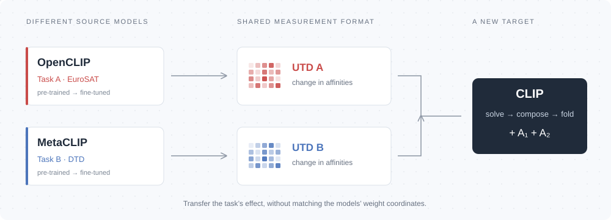
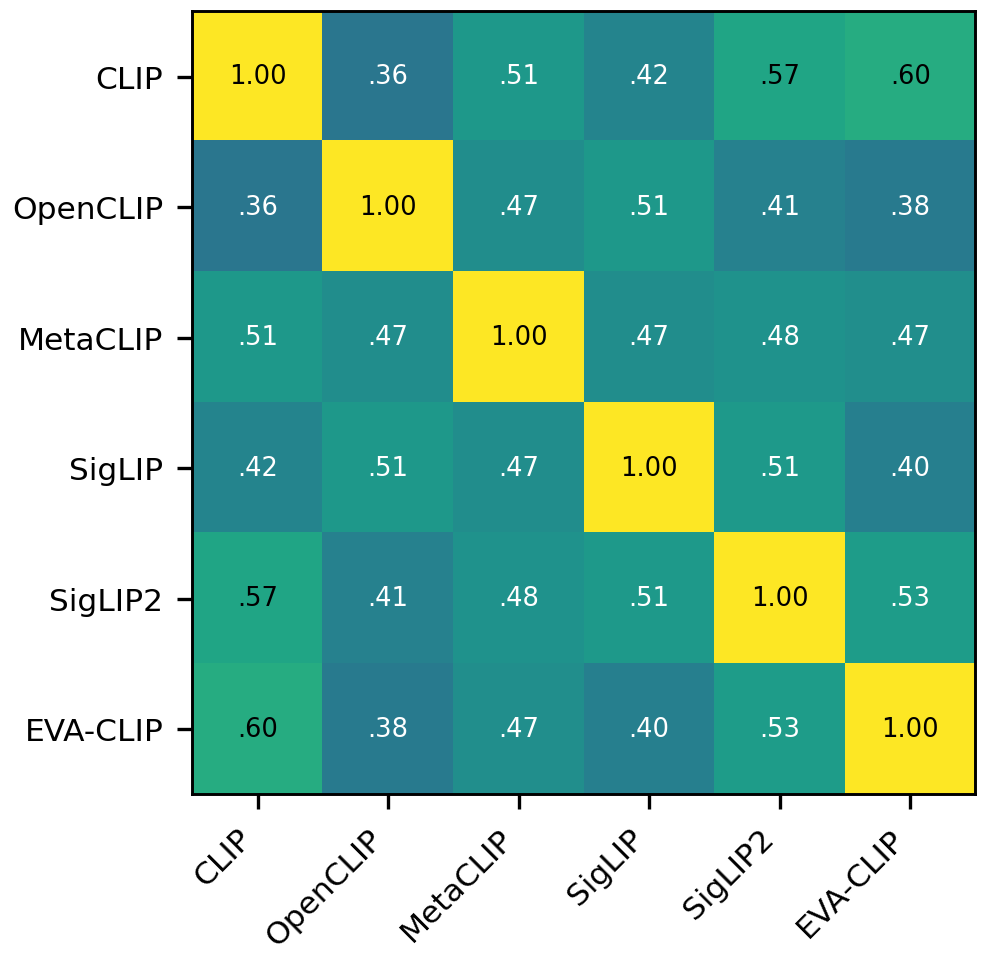
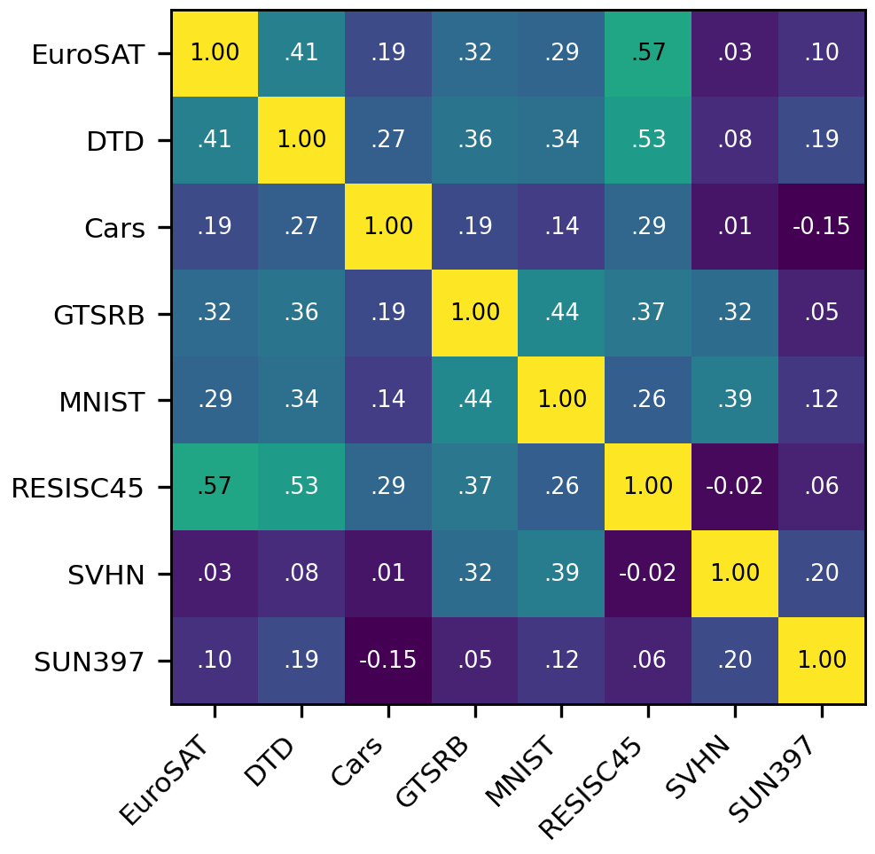
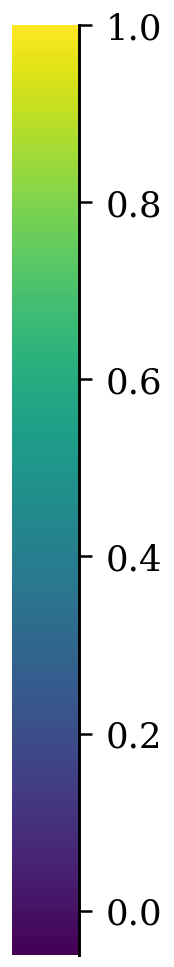

A common observable
Universal Task Descriptors measure fine-tuning-induced affinity shifts in an architecture-independent format.
NEURIPS 2026
Task knowledge travels beyond the model that learned it.
TelePIX
A visual introduction to task vectors, Universal Task Descriptors, and cross-model task arithmetic.
Weight-space task arithmetic starts with a simple difference, δ = θft − θpre. But two models need not share an architecture, dimension, or initialization. Their updates have no common coordinates.
What if the same task, learned by different models, were different shadows of one shared object? We make that idea operational: measure what fine-tuning changes, then add or subtract that change in another model.

A task vector is a model-specific shadow of shared task knowledge. Instead of translating weight coordinates, we measure the task’s functional effect.
Universal Task Descriptors measure fine-tuning-induced affinity shifts in an architecture-independent format.
A reusable bank of closed-form operators, or a richer encoder adapter trained on the same descriptor objective.
Compose and negate tasks across six model families, with further tests on remote sensing and audio–text models.
We investigate whether fine-tuning heterogeneous pre-trained models on the same task induces a shared change in behavior. Universal Task Descriptors record changes in cross-modal affinities on unlabeled probes and semantic prompts. Their shape depends on the probes and prompts, rather than the model architecture or embedding dimension. A descriptor can be transferred to a new target by solving for a linear edit or fitting a low-rank encoder adapter. The linear route produces reusable operators whose signed sums implement task compositions. Across six vision–language model families and eight tasks, cross-model transfer retains 74–80% of the gain obtained with the target’s own descriptors. Experiments also test datasets excluded from fitting and extend the formulation to audio–text models.
A shared set of probe inputs and semantic prompts gives every model the same measurement grid. Each cell asks: how much did fine-tuning change this input–prompt affinity?
Illustrative values, not experimental measurements.
Rows correspond to N unlabeled probe inputs. Columns correspond to M semantic prompts. The inputs and prompts are held fixed when comparing models on a task.
The encoders produce unit-norm embeddings, so each entry is a change in cosine similarity. Differencing removes the model’s starting affinities and isolates what learning changed.
A 768-dimensional encoder and a 1,024-dimensional encoder both produce an N × M descriptor on the same probes and prompts.
Same-task agreement across models is roughly twice the cross-task agreement within a model. The pattern is task-specific, rather than a generic shift caused by fine-tuning.



The task-specific structure makes it possible to transfer learned changes between models, motivating a common descriptor space.
The target is edited until its induced affinity changes match the source descriptor. Both routes use the same task descriptors, unlabeled probes, and class names.
Measure the fine-tuning effect on each task’s own probes and prompts.
Find a target edit that reproduces the requested descriptor.
Fold in a solved operator or train an encoder adapter.
The descriptor factorizes as U = ΔF G⊤. Approximating the embedding change by a linear map turns matching into a regularized least-squares problem.
For a target with a final projection W, the operator can be absorbed as W ← (I + αA)W. The target keeps its architecture and parameter count.
Residual pooling heads use the corresponding last-affine update described in Appendix M.
Fit low-rank adapters to the target’s attention projections. The edit can reach through the encoder and fit all terms of a composition jointly.
This gives the edit more freedom than a single output operator. It requires a new optimization for each composition, source assignment, or strength.
The paper uses rank-16 target adapters. Adapter results cover seeded subsets, not all closed-form cells.
Choose an operation to see what is composed. Each entry was solved on its task’s own grid, so differently shaped descriptors never need to be added directly.
Add operators from two sources, then fold their sum into one target. The paper uses α = 0.5 for closed-form addition.
Schematic algebra · not a live model evaluationFor the full-rank solver on one shared probe–prompt grid, the solution map is linear: A*(c₁U₁ + c₂U₂) = c₁A*(U₁) + c₂A*(U₂). For different task grids, the paper characterizes operator composition through cross-task descriptor terms and a prediction-margin condition (Appendix C.3).
The descriptor, unlabeled probe inputs, and class names. Source weights and per-image labels are not used for target-side fitting. Label-free transfer still requires data.
Six families serve as both sources and targets: CLIP, OpenCLIP, SigLIP, SigLIP2, MetaCLIP, and EVA-CLIP. Eight tasks span digits, textures, traffic signs, vehicles, scenes, and remote sensing.
of the own-descriptor reference gain
retained after cross-model transfer
cross-model addition cells
across all 28 task pairs
cross-model negation cells
with held-out control evaluation
Transferring either task alone mainly benefits that task. Composing the operators improves both.
Source: Table 1, addition and Table 2, negation. Tasks: EuroSAT, DTD, Cars, GTSRB, MNIST, RESISC45, SVHN, SUN397. CIFAR-100 and ImageNet are controls and enter no probe set.
If the operator only re-scored the prompts used in fitting, it would not improve a dataset whose inputs and class names never entered either fit. The paper tests exactly this.
Compose two remote-sensing tasks and evaluate on the third, rotating the held-out dataset across RESISC45, UCMerced, and AID.
Table 3 · Mean accuracy (%) across the three held-out datasets, with two distinct source families, both different from the target. Closed form: α = 0.5; adapter: full strength.
+6.06 pp over zero-shot for the closed form. Transfer reaches inputs and class names excluded from fitting.
Four CLAP checkpoints differ in audio-tower width and depth. Descriptors use audio–text affinities; one of ESC-50 and GTZAN is removed while the other is retained.
Table 4 · Cross-model closed-form negation, 24 cells, λ = 1. Changes are relative to the reported zero-shot baseline; UrbanSound8K enters no probe set.
Audio–text experiments in §5.6 ↗The official PyTorch implementation includes closed-form and adapter routes, plus 48 source fine-tunes: six model families × eight tasks.
Install the dependencies and package in the documented Python 3.10 environment. Models and datasets are downloaded on first use.
Open GitHub ↗Source checkpoints ↗Commands shown here match the repository README. Add --method adapter for the adapter route.
# CLIP absorbs EuroSAT and DTD from different sources
python addition.py --target clip \
--terms openclip:eurosat,metaclip:dtd
# Remove EuroSAT through OpenCLIP's descriptor
python negation.py --target clip \
--source openclip --task eurosat@article{park2026platonic,
title={Platonic Task Arithmetic},
author={Park, Junghwan and Cho, Woojin},
journal={arXiv preprint arXiv:2610.00929},
year={2026}
}